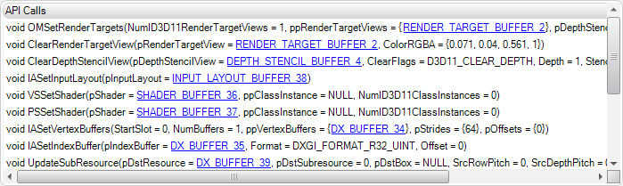

The "API Calls" tab in the Scrubber DX displays the DirectX API calls made prior to the selected draw call..

Basic usage:
• Capture a frame from the connected application, and select a draw call in the DrawCalls pane. The "API Calls" tab will list all API calls made between the selected draw call and the previous draw call.
• Click on a hyperlink in an API call to display additional information about the selected element in the Buffer View pane.